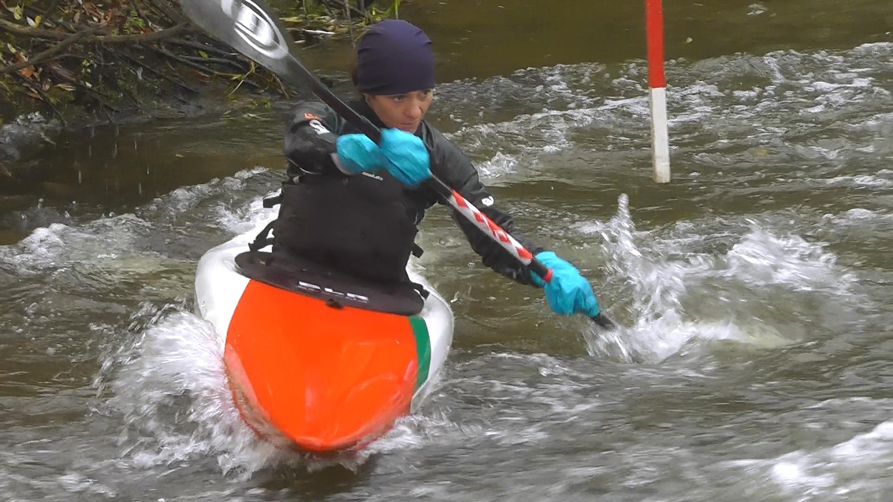
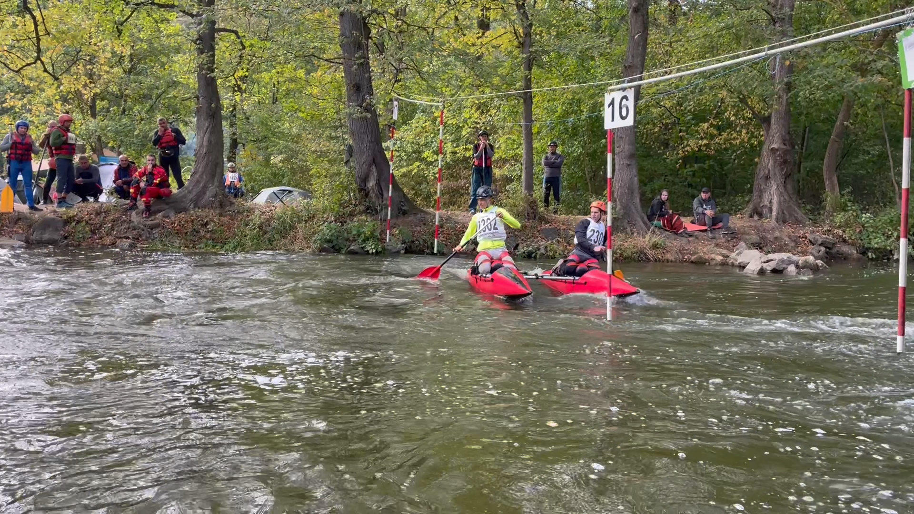
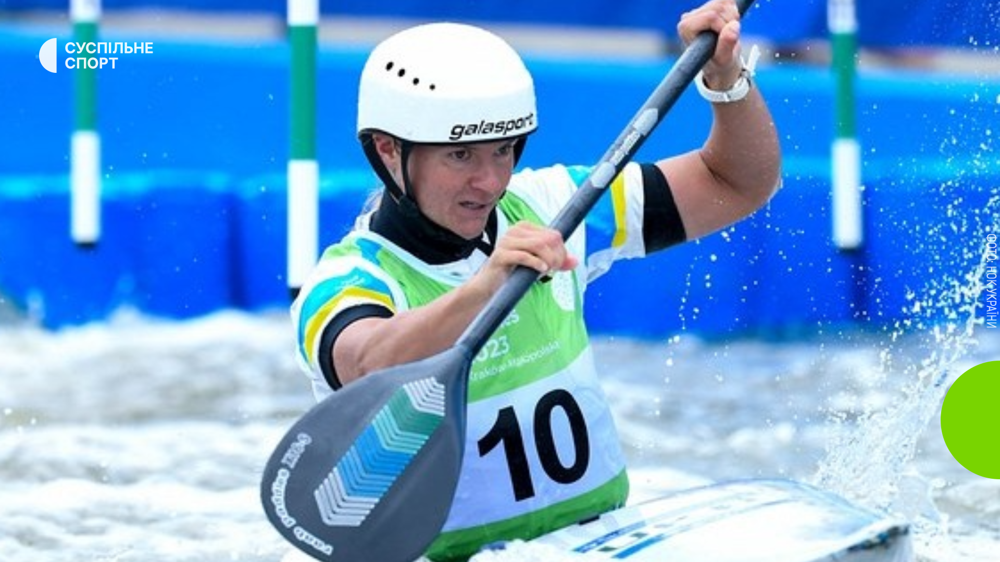
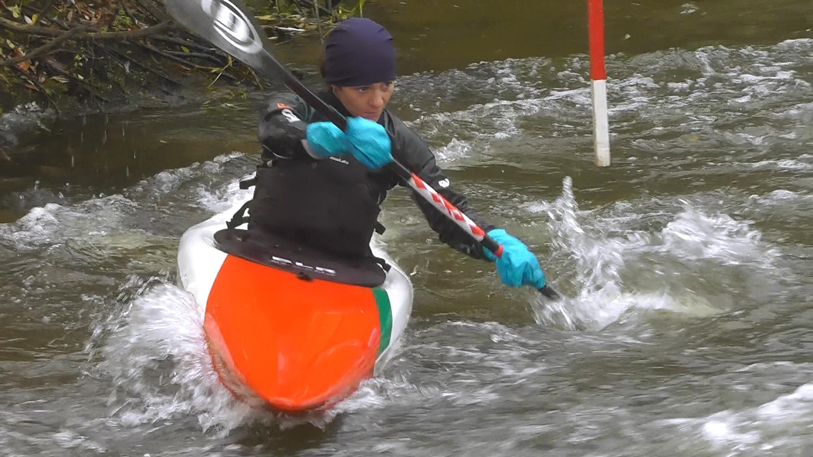
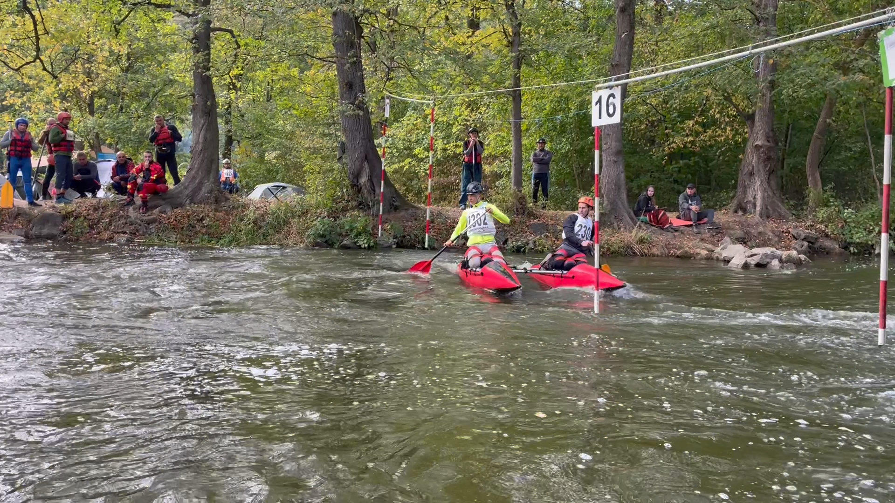
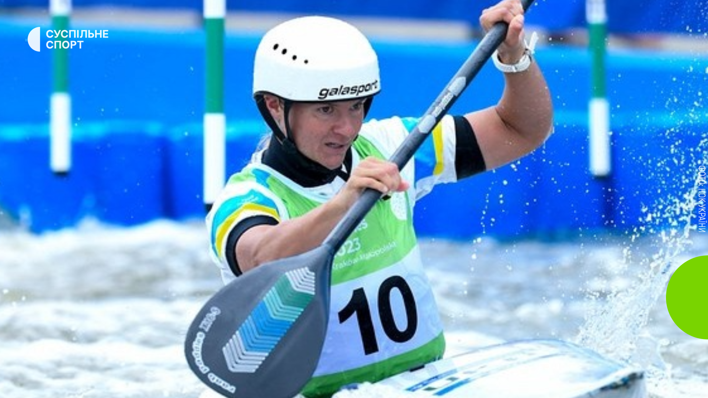
 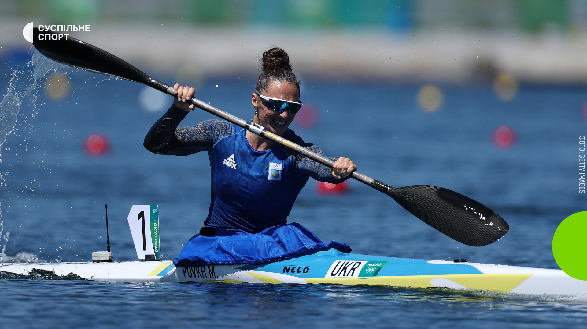
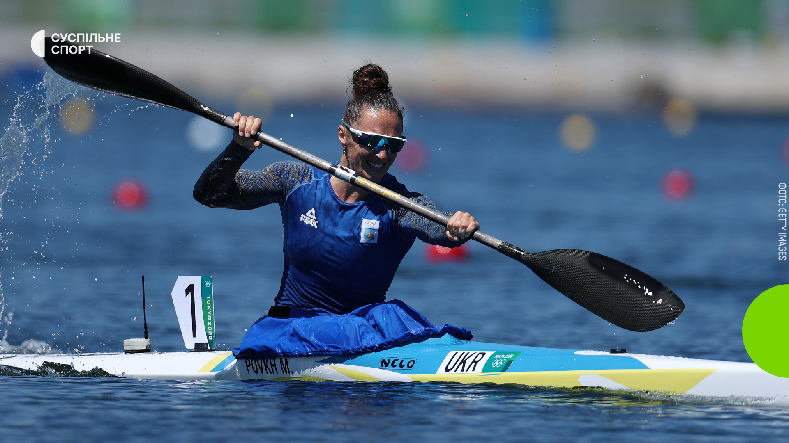
⬆
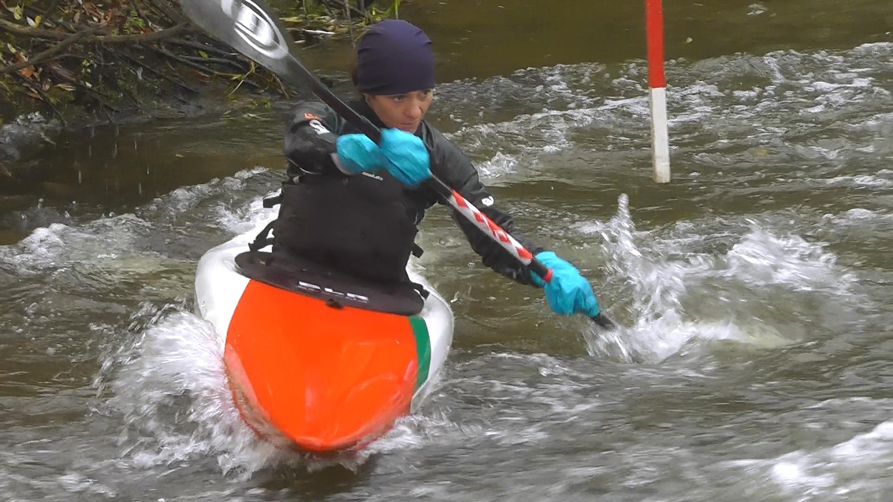
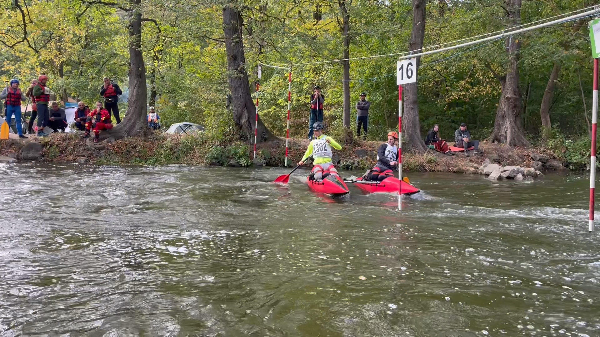
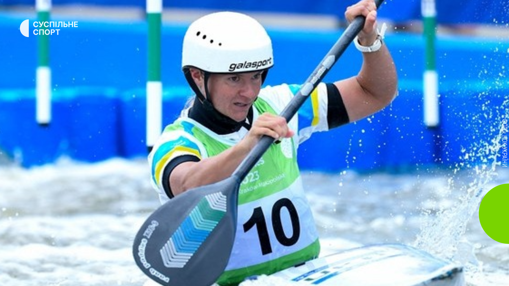
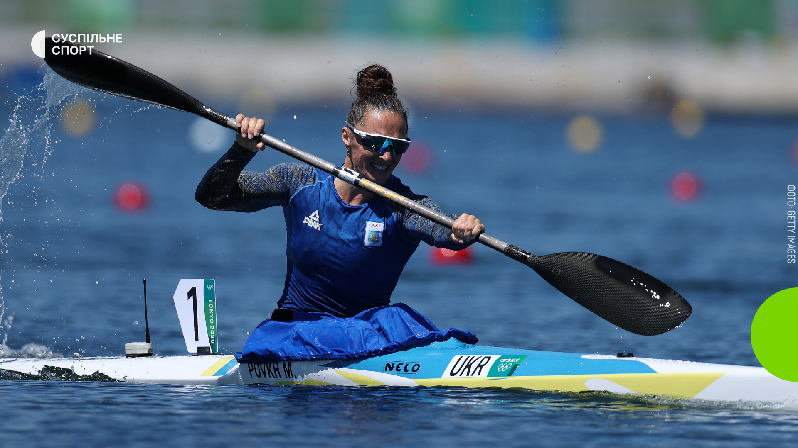
Веслува́льний сла́лом — різновид спортивного веслування, що полягає в проходженні на швидкість дистанції, яка визначається порядком розташування воріт, які виставляються на річці з порогом або на спеціально облаштованому каналі. Швидкість потоку води має бути не менше 2 м/с. Змагання проводяться на дистанції довжиною 250—400 м.
Ворота, що розташовуються на дистанції бувають «прямі» (фарбуються в зелено-білий колір) — їх долають за течією та «зворотні» (фарбуються в червоно-білий колір) — їх долають проти течії. Ворота на дистанції нумеруються (наприклад від 1 до 25), що визначає порядок проходження дистанції. Під час проходження дистанції можуть нараховуватися штрафні бали, які в підсумку додаються до основного часу (часу проходження дистанції). Дистанція 400 м з кількістю воріт від 18-25, перепад рівня води між стартом та фінішем має бути від 3-6 м, швидкість течії від 2 м/с.
Розвитком веслувального слалому займається Міжнародна федерація каное (англ. International Canoe Federation — ICF). Перші змагання з веслувального слалому були проведені 1933 р. на річці Ааре в Швейцарії. Перший чемпіонат світу відбувся в 1949 р. Веслувальний слалом є олімпійським видом спорту. В програму Ігор Олімпіад вперше веслувальний слалом увійшов у 1972 році (Мюнхен) як показова дисципліна, потім був вилучений з Олімпійської програми і знову включений у 1992 році (Барселона) до сьогодення.